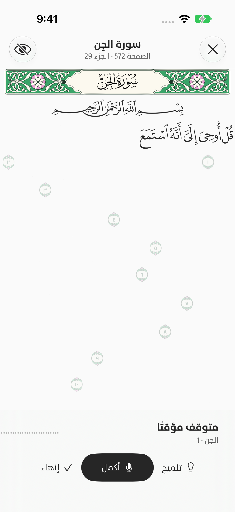
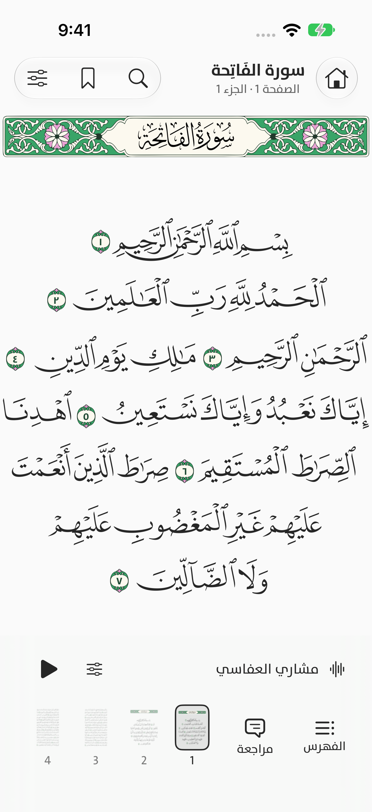
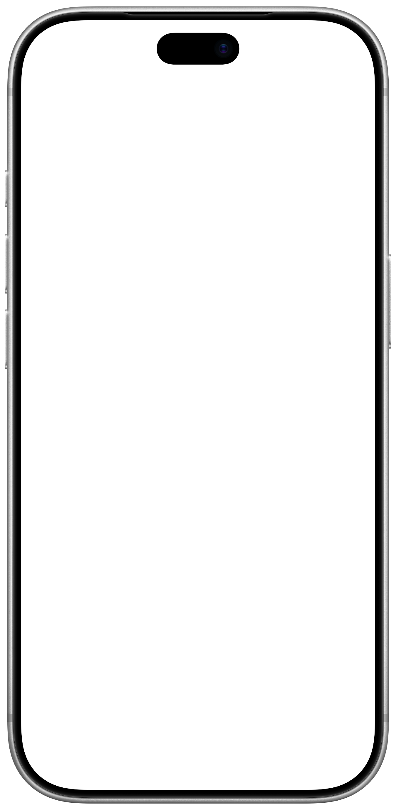
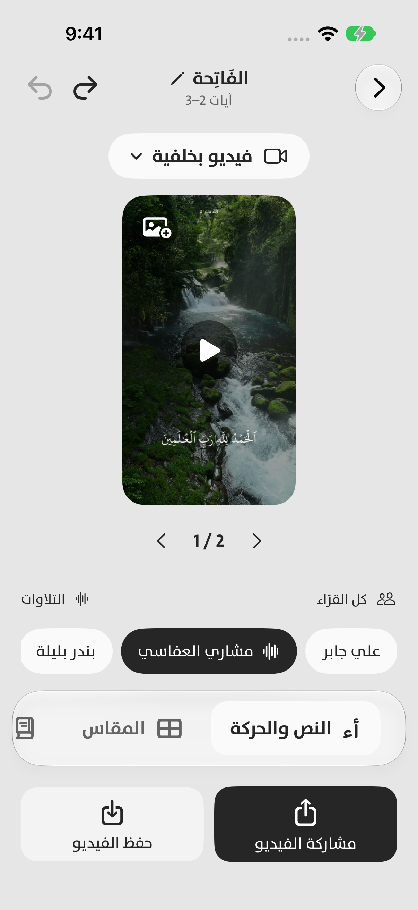
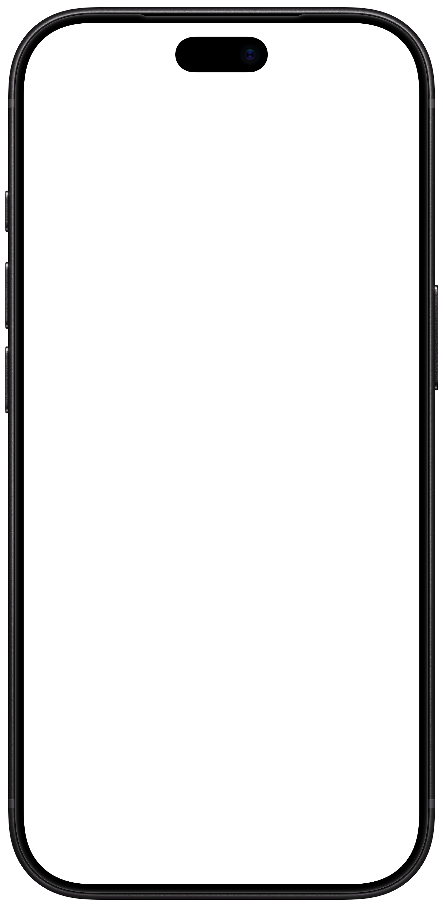

تسميع الحفظراجع حفظك،
راجع حفظك،
من حيث تريد.
ابدأ التلاوة، وتابع الكلمات التي يتعرّف عليها سنا في موضعها من المصحف. يمكنك الانتقال إلى سورة أخرى خلال الجلسة.
المعالجة على جهازك
مصحفك، وتسميع حفظك، ومشاركة الآيات. في تجربة واحدة، تتشكّل على اختيارك.
تعرّف على سناقريبًا على App Store. سنا حاليًا في المرحلة التجريبية.




ابدأ التلاوة، وتابع الكلمات التي يتعرّف عليها سنا في موضعها من المصحف. يمكنك الانتقال إلى سورة أخرى خلال الجلسة.
المعالجة على جهازك
مصحف المدينة بإصداريه، أو المصحف النصي. اختر الزخرفة والفاصل، وأكمل من الموضع الذي حفظته.
أضف ملفًا صوتيًا أو فيديو، أو شارك رابطًا من Instagram وTikTok إلى سنا. اختر الجزء، وحسّن الصوت، ثم أنشئ مشهدك.
فيديو من ألبومك أو مكتبة المشاهد، أو صفحة مصحف تفاعلية. اضبط موضع الآيات، وأضف التفسير الميسر أو الترجمة الإنجليزية.
تعرّف على السورة والآيات في صورة المصحف، ثم اقرأ التفسير أو استمع أو شارك. راجع النتائج مقابل صورتك قبل المشاركة.
افتح التفسير الميسر عند الآية، أو اقرأ تفسير السعدي في مساحة مستقلة للنص الطويل. نزّل الكتاب، وأدر تنزيلاتك من مكان واحد.
خصوصيتك، بوضوحنضع اللمسات الأخيرة. سيكون رابط التحميل هنا عند الإطلاق.